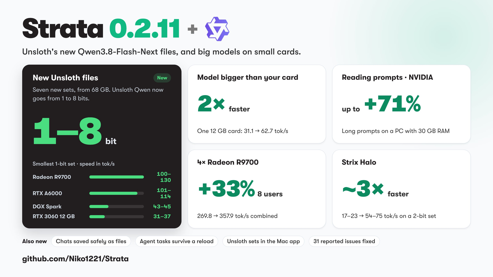
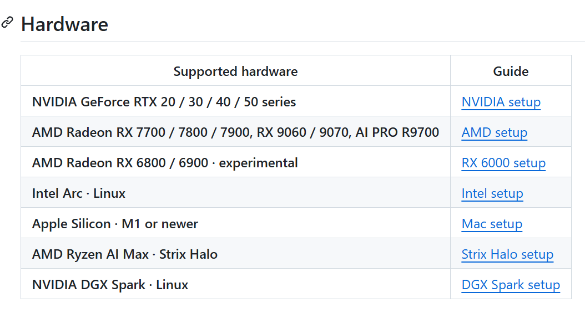
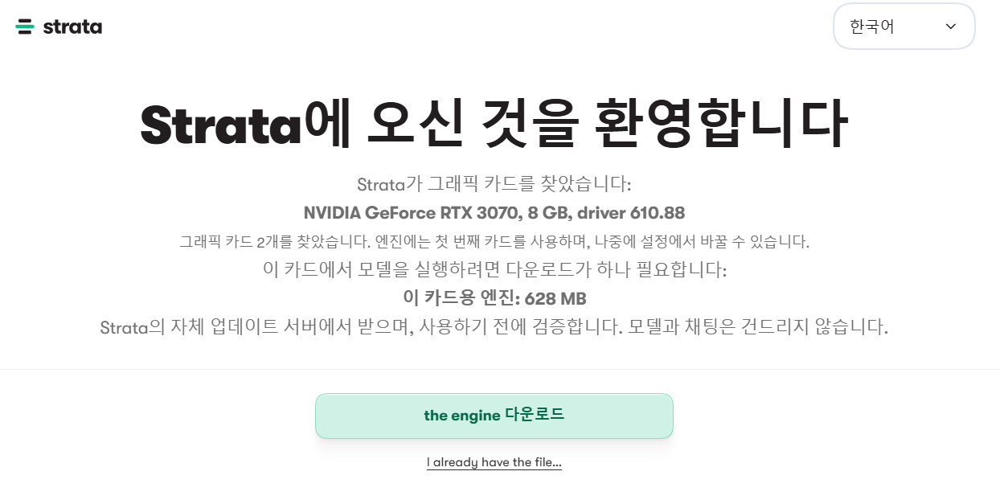
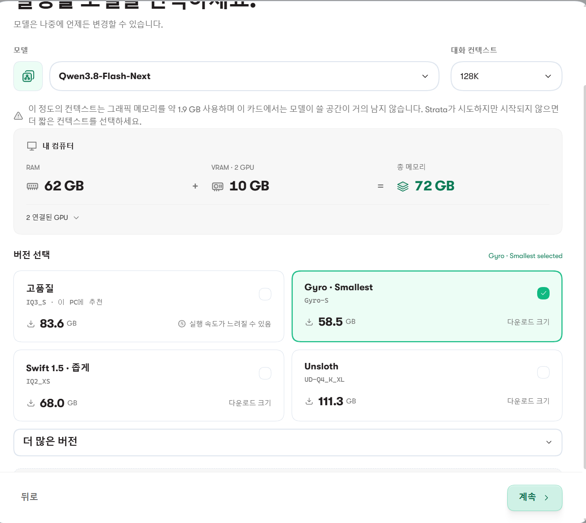
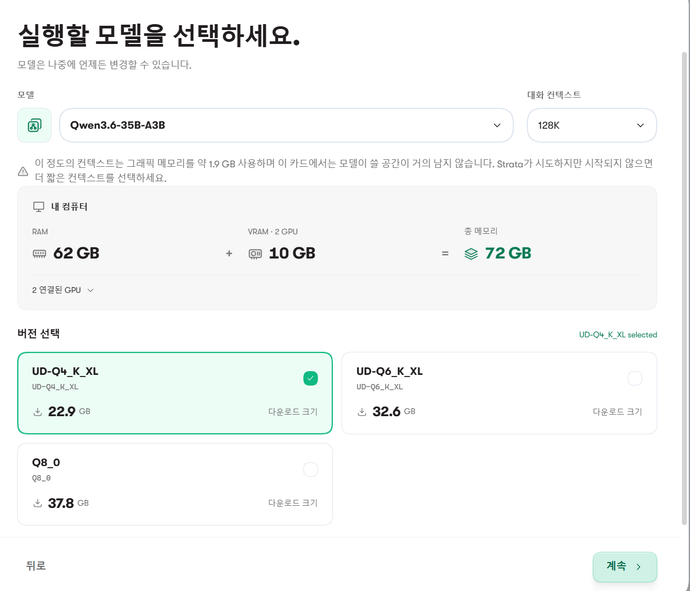
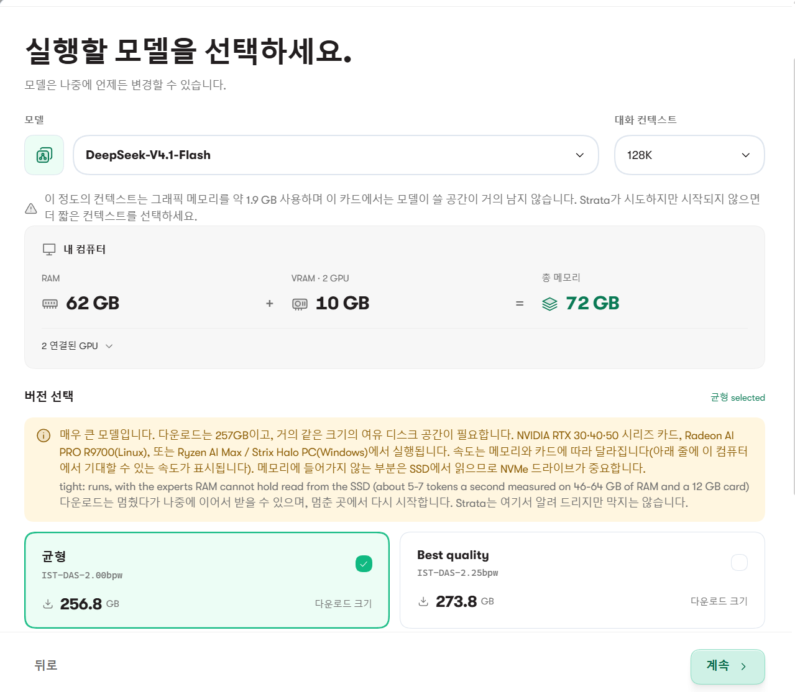
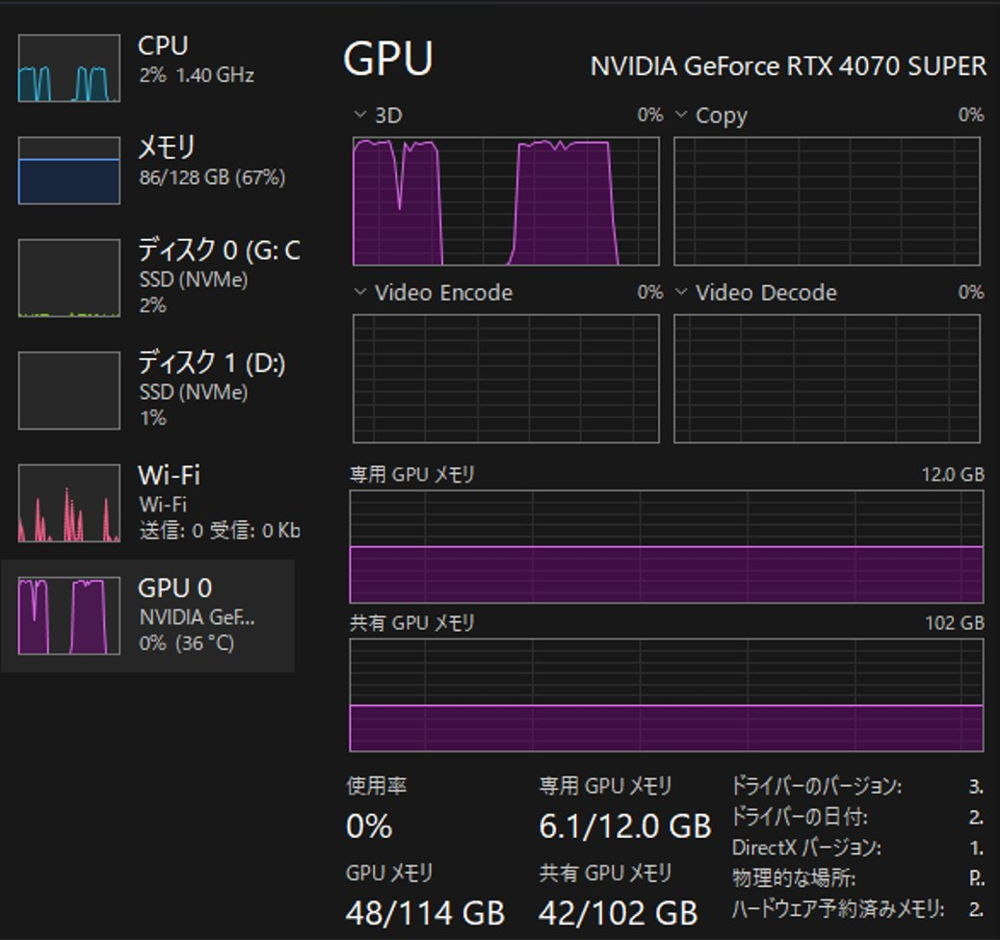
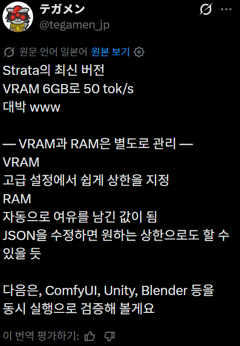
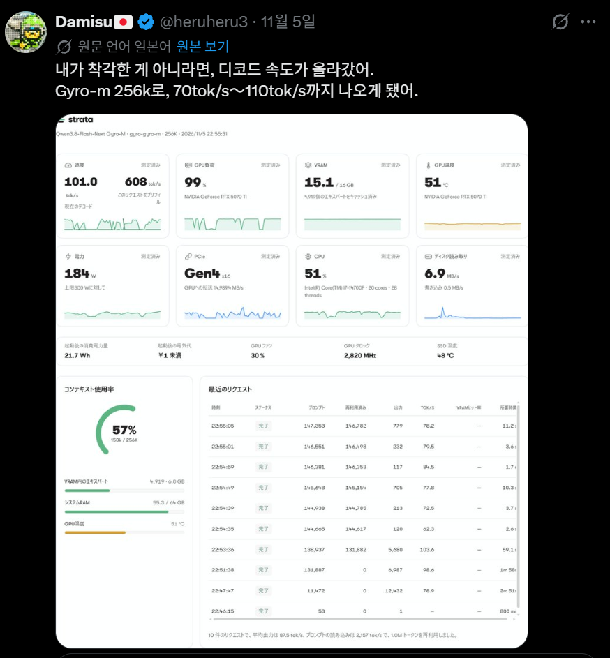
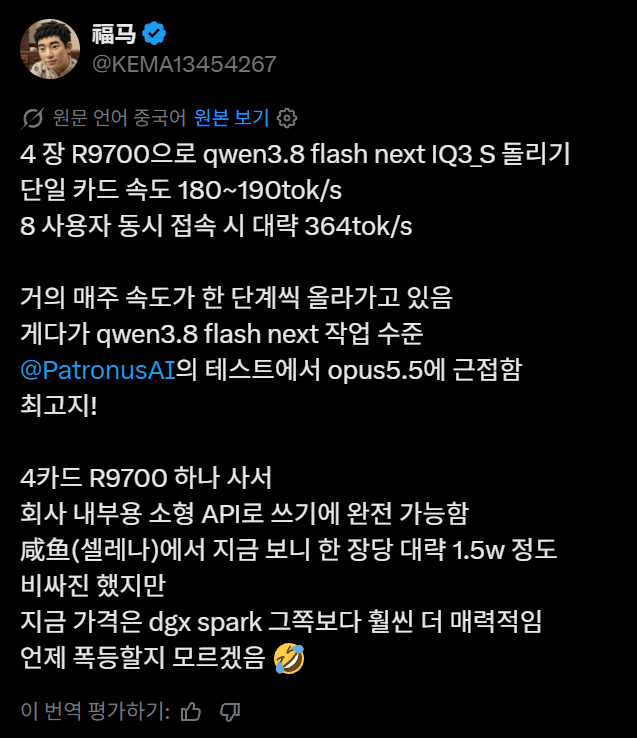

이제 8GB VRAM 그래픽카드로도 거대 로컬 AI를 작동시킬 수 있게 됨.
https://github.com/niko1221/strata
전에 이야기한 Strata 엔진 이야기임.
https://www.dogdrip.net/728784997
https://www.dogdrip.net/732031133
Strata 엔진은
180B짜리 Qwen3.8-Flash-Next
35B짜리 Qwen3.6-35B-A3B
763B짜리 DeepSeekV4.1-Flash-1017
를 가동 시키고 있는데,
v0.1.38 (10월 3일)로 기존의 12GB / 64 GB RAM 요구량을 8GB / 32GB 까지 낮췄음.
물론 더 느려지는건 감안해야 하고

현재는 v0.2.11 (11월 5일) 최신 업데이트로 속도를 더 향상시킴.

공식 지원 하드웨어들은 이럼.
8GB로 가능해졌다는 소식을 듣고 가지고 있던 3070 8GB로 가동을 시켜봄
RAM은 64GB인데 실험을 위해서 램까지 빼보는건 좀 아닌거 같으니 양해 바람.



180B짜리 Qwen3.8-Flash-Next
35B짜리 Qwen3.6-35B-A3B
는 모두 128K는 1.9GB를 사용하니 8GB VRAM으로는 어렵다 낮춰라. 라는 경고가 뜸.
둘다 64K로 낮추니깐 경고가 사라짐.

763B짜리 DeepSeekV4.1-Flash-1017
는 그냥 바로 경고가 뜸

4070 12GB 중 6GB만 쓰고 50톡을 달성했다는 보고도 올라옴.


5070 TI 16GB로 256K를 70~110톡

회사 소형 서버에 9700 4장으로 단일 사용자 180~190톡 8명 동시접속 364톡
스스디까지 쓰는건 버거워보이고 램이 존니 많아야되네